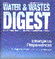
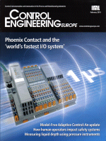
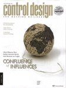
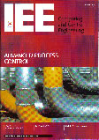
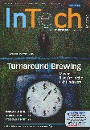
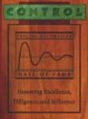
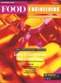

| 5/2010 期刊杂志 |
CyboSoft的MFA技术现在可用于ControlLogix 运行于ProSoft的PC56工业机架电脑中，CyboSoft的CyboCon高速MFA控制软件可与ControlLogix系统无缝集成，为工业和设备控制应用的关键任务提供高速控制。阅读全文 |
|
| 4/2010 期刊杂志 |
 | 使pH值保持稳定 工业生产用水的处理及循环再造，已成为重要的社会和经济问题，特别是淡水正在成为一种稀缺资源。在大型钢铁企业生产中，制造出大量废水需要处理。如果不能正确和有效地完成，废水处理将是昂贵和费时的。不稳定的pH控制仍是关键问题，因为它会导致化学药剂的过量消耗，造成水处理的高成本和低效率。阅读全文 |
| 2/2010 期刊杂志 |
 | 无模型自适应控制：影响自动化行业 MFA技术一直在履行其作为“下一代主流控制器”的承诺。自90年代末在自动化行业推出以来，该技术已被大量最终用户使用并嵌入过程控制、设备控制和楼宇自动化主机供应商的OEM设备中。阅读全文 |
| 8/2008 期刊杂志 |
新的MFA控制工具包?- 帮助自动化工程师解决各种困难的控制问题 “该产品能帮助弥合学术界和工业界的差距，因为它是唯一经过大量市场验证同类型实时控制产品通用的离线控制仿真软件，”CyboSoft总裁程树行博士说。“它们包括CyboSoft提供的多种MFA控制产品以及过程控制、设备控制和楼宇控制市场供应商提供的MFA嵌入或集成产品和系统。”阅读全文 |
|
| 8/2008 期刊杂志 |
 | CyboSoft推出用于MATLAB的控制工具包 控制设计工程师通常采用PID控制器或基于模型的控制设计工具来设计控制系统。 为了帮助自动化工程师解决各种困难的控制问题，CyboSoft推出了用于Matlab软件的无模型自适应的MFA控制工具包。无模型自适应控制，顾名思义，是一种无需建立过程模型的自适应和鲁棒控制方法。基于MFA核心控制技术，CyboSoft针对各种特殊的控制问题，设计开发了多种MFA控制器。阅读全文 |
| 10/2007 期刊杂志 |
 |
无模型自适应控制技术，使乙烯急冷水pH值控制 帮助中石油提高乙烯生产效率和生产安全。 文章中介绍了有效地控制这些最具挑战性的pH回路的必要条件，并说明了为什么无模型自适应（MFA）控制技术能够改善中石油的乙烯生产效率和生产安全。同时还论述了如何及在何处将MFA控制技术应用在广泛的应用领域，解决中石油的各种实际控制难题以改善进程并获得更强的竞争优势。索取文章 |
| 2006春/夏 《InTech》 |
 |
坚实如钢的pH控制 在一个现代钢铁厂中，连铸是最关键的生产环节之一。连铸机将液态钢水铸成固态钢坯，为轧钢机生产最终的钢板做好准备。。精馏塔消耗的让我们来看看如何能有效地控制冷却水的水温以及酸洗线酸液的pH值。此文也将讨论无模型自适应(Model-Free Adaptive – MFA)控制技术。索取文章 |
| 2006春/夏 《工业嵌入式系统》 |
无模型自适应自适应控制技术改进精馏塔的控制 帮助中石油提高生产安全和生产效率。 精馏塔是化工企业使用最多的生产设备。精馏塔消耗的能源要占到了工厂运行开支的50%以上。索取文章 |
|
| 4/01/2006 《自动化世界》 |
无模型自适应自适应控制技术改进精馏塔的控制 帮助中石油提高生产安全和生产效率。 精馏塔是化工企业使用最多的生产设备。精馏塔消耗的能源要占到了工厂运行开支的50%以上。索取文章 |
|
| 10/01/2004 期刊杂志 |
无模型自适应自适应控制技术改进精馏塔的控制 帮助中石油提高生产安全和生产效率。 精馏塔是化工企业使用最多的生产设备。精馏塔消耗的能源要占到了工厂运行开支的50%以上。索取文章 |
|
| 9/01/2004 期刊杂志 |
水处理中的无模型自适应控制? 许多环境保护机构要求自来水公司对浊度进行监控。混浊的颗粒含有有害的污染物，如病毒和细菌。由于自来水水处理过程存在很大的时滞，因此浊度控制相当困难。一种新的控制技术MFA应已经成功地解决了这个控制难题。 |
|
| 6/02/2004 期刊杂志 |
 | 无模型自适应控制?－ 技术，方法和应用 自从1997年问世以来，无模型自适应（MFA）控制产品已经广泛地应用于各主要流程行业，帮助用户取得了巨大的利益。 …… MFA系列对硬件配置的要求不高，占用很少的空间和CPU，因此，很容易将MFA嵌入各种控制设备。可以在各类供应商提供的平台上获取MFA，包括楼宇控制器，单回路控制器，可编程逻辑控制器（PLC），混合式控制器，过程自动控制器（PAC），控制软件，集散控制系统（DCS）和控制阀等。MFA将全面取代PID控制器，也将用来控制那些目前仍然处于手动控制的回路。这一革命性的技术能帮助用户提升其在全球经济环境下的竞争力。?索取文章 |
| 6/21/2004 期刊杂志 |
MFA控制提高生产效率 阿克苏诺贝尔（Akzo Nobel）的德克萨斯帕萨迪纳工厂生产催化裂化催化剂（FCC）。该厂生产出的FCC装运到全世界各大炼油厂，用于催化裂化过程。催化裂化是现代化炼油的主要部分，对炼油过程起着至关重要的作用。 |
|
| 11/11/2003 期刊杂志 |
 | CyboSoft在InTech杂志上发表钢铁厂混合煤气热值检测与自动控制文章 这里描述了如何实现混合煤气热值的检测与自动控制，以及无模型自适应（MFA）控制技术是如何帮助用户提高生产效率和产量的。 |
| 9/8/2003 期刊杂志 |
CyboSoft在Oil & Gas杂志上发表油田注汽（EOR）锅炉优化控制系统文章?（需要网上订阅） 中石油在辽河油田的注汽锅炉上实施了无模型自适应（MFA）控制系统后，保证了生产的安全，提高了石油的产量并节约了能源。 |
|
| 6/10/2001 期刊杂志 |
2001年5月出版的《控制》杂志上发表MFA控制在空气分离装置上使用的文章 MFA的安装使用非常容易，Air Liquide公司的工程师只用了一天时间就在空气分离装置上成功投运了MFA控制器。自从安装好控制器后，就无需维护或调整参数。Air Liquide公司因此实现了创纪录的产量，改进了质量控制，提高了设备运行的稳定性。基于这个成功的应用案例，Air Liquide美国公司指定MFA控制器为其先进调节控制应用。 |
|
| 2/16/2001 期刊杂志 |
 | 《控制》杂志上发表CyboCon HS独家报道 复杂高速的系统通常要求有即时的自适应能力，而基于模型的控制系统没有足够的时间和数据来学习一个新的模型。高速版无模型自适应控制非常适用于那些过程模型未知的应用场合。 |
| 2/14/2001 期刊杂志 |
CyboSoft登上《控制工程－欧洲版》杂志的封面 ……MFA是如何在既无过程模型又无操作员专心干预的情况下对许多难控回路实施有效的反馈控制的呢？在此之前这仍是一个严加保护的秘密。然而，程博士已经成功地获得了此项技术的专利权，由此也透露了一些MFA的关键细节。….. |
|
| 12/15/1999 期刊杂志 |
《碳氢化合物处理》杂志上发表MFA在延迟焦化炉上应用的文章 1998年6月至今，MFA控制系统一直运行于广石化的两个焦化炉上，操作人员终于摆脱了繁琐低效的人工操作，系统运行平稳，实现了高效高产。索取文章 |
|
| 11/15/1999 期刊杂志 |
 | 《食品工程》杂志上发表MFA控制在番茄热粉碎工艺上应用的文章 仅用了几个小时的时间就在加州伍德兰的Del Monte Foods公司安装了CyboCon控制软件，实现了9条番茄热粉碎生产线的自动控制。自安装以来，即使存在番茄负荷的大扰动，CyboCon每天都运行24小时并保证产品的温度控制在+2°F和-5°F的范围内。索取文章 |
| 9/15/1998 期刊杂志 |
《控制》杂志上发表MFA控制在蒸发器上应用的文章 在美国加州Madera的Tri-Valley Growers公司的三效蒸发器上安装了CyboCon控制软件，用两输入两输出MFA控制器控制浓度和液位。该系统 |